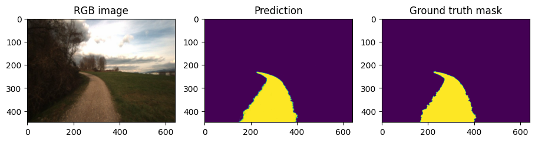

Train with augmentations¶
from datetime import datetime
import matplotlib.pyplot as plt
import numpy as np
import tensorflow as tf
from tensorflow.python.distribute.tpu_strategy import TPUStrategy
import segmentation_models as sm
WARNING:root:Limited tf.compat.v2.summary API due to missing TensorBoard installation.
WARNING:root:Limited tf.compat.v2.summary API due to missing TensorBoard installation.
WARNING:root:Limited tf.compat.v2.summary API due to missing TensorBoard installation.
WARNING:root:Limited tf.summary API due to missing TensorBoard installation.
Segmentation Models: using `tf.keras` framework.
# Convenience methods
from visualise import show_two, show
from tpu import resolve_tpu_strategy, get_tpu_devices
from dataset import load_dataset, split_dataset_paths
Prep¶
These are the same steps as train.ipynb
tpu_strategy = resolve_tpu_strategy('padnet')
nbro_tpu_devices = len(get_tpu_devices())
print(f"{nbro_tpu_devices} TPU devices connected!")
PARALLEL_OPS = None
INFO:tensorflow:Initializing the TPU system: padnet
INFO:tensorflow:Initializing the TPU system: padnet
INFO:tensorflow:Clearing out eager caches
INFO:tensorflow:Clearing out eager caches
INFO:tensorflow:Finished initializing TPU system.
INFO:tensorflow:Finished initializing TPU system.
INFO:tensorflow:Found TPU system:
INFO:tensorflow:Found TPU system:
INFO:tensorflow:*** Num TPU Cores: 8
INFO:tensorflow:*** Num TPU Cores: 8
INFO:tensorflow:*** Num TPU Workers: 1
INFO:tensorflow:*** Num TPU Workers: 1
INFO:tensorflow:*** Num TPU Cores Per Worker: 8
INFO:tensorflow:*** Num TPU Cores Per Worker: 8
INFO:tensorflow:*** Available Device: _DeviceAttributes(/job:localhost/replica:0/task:0/device:CPU:0, CPU, 0, 0)
INFO:tensorflow:*** Available Device: _DeviceAttributes(/job:localhost/replica:0/task:0/device:CPU:0, CPU, 0, 0)
INFO:tensorflow:*** Available Device: _DeviceAttributes(/job:worker/replica:0/task:0/device:CPU:0, CPU, 0, 0)
INFO:tensorflow:*** Available Device: _DeviceAttributes(/job:worker/replica:0/task:0/device:CPU:0, CPU, 0, 0)
INFO:tensorflow:*** Available Device: _DeviceAttributes(/job:worker/replica:0/task:0/device:TPU:0, TPU, 0, 0)
INFO:tensorflow:*** Available Device: _DeviceAttributes(/job:worker/replica:0/task:0/device:TPU:0, TPU, 0, 0)
INFO:tensorflow:*** Available Device: _DeviceAttributes(/job:worker/replica:0/task:0/device:TPU:1, TPU, 0, 0)
INFO:tensorflow:*** Available Device: _DeviceAttributes(/job:worker/replica:0/task:0/device:TPU:1, TPU, 0, 0)
INFO:tensorflow:*** Available Device: _DeviceAttributes(/job:worker/replica:0/task:0/device:TPU:2, TPU, 0, 0)
INFO:tensorflow:*** Available Device: _DeviceAttributes(/job:worker/replica:0/task:0/device:TPU:2, TPU, 0, 0)
INFO:tensorflow:*** Available Device: _DeviceAttributes(/job:worker/replica:0/task:0/device:TPU:3, TPU, 0, 0)
INFO:tensorflow:*** Available Device: _DeviceAttributes(/job:worker/replica:0/task:0/device:TPU:3, TPU, 0, 0)
INFO:tensorflow:*** Available Device: _DeviceAttributes(/job:worker/replica:0/task:0/device:TPU:4, TPU, 0, 0)
INFO:tensorflow:*** Available Device: _DeviceAttributes(/job:worker/replica:0/task:0/device:TPU:4, TPU, 0, 0)
INFO:tensorflow:*** Available Device: _DeviceAttributes(/job:worker/replica:0/task:0/device:TPU:5, TPU, 0, 0)
INFO:tensorflow:*** Available Device: _DeviceAttributes(/job:worker/replica:0/task:0/device:TPU:5, TPU, 0, 0)
INFO:tensorflow:*** Available Device: _DeviceAttributes(/job:worker/replica:0/task:0/device:TPU:6, TPU, 0, 0)
INFO:tensorflow:*** Available Device: _DeviceAttributes(/job:worker/replica:0/task:0/device:TPU:6, TPU, 0, 0)
INFO:tensorflow:*** Available Device: _DeviceAttributes(/job:worker/replica:0/task:0/device:TPU:7, TPU, 0, 0)
INFO:tensorflow:*** Available Device: _DeviceAttributes(/job:worker/replica:0/task:0/device:TPU:7, TPU, 0, 0)
INFO:tensorflow:*** Available Device: _DeviceAttributes(/job:worker/replica:0/task:0/device:TPU_SYSTEM:0, TPU_SYSTEM, 0, 0)
INFO:tensorflow:*** Available Device: _DeviceAttributes(/job:worker/replica:0/task:0/device:TPU_SYSTEM:0, TPU_SYSTEM, 0, 0)
INFO:tensorflow:*** Available Device: _DeviceAttributes(/job:worker/replica:0/task:0/device:XLA_CPU:0, XLA_CPU, 0, 0)
INFO:tensorflow:*** Available Device: _DeviceAttributes(/job:worker/replica:0/task:0/device:XLA_CPU:0, XLA_CPU, 0, 0)
IMAGE_SIZE = [448, 640]
GCS_PATTERN = 'gs://padnet-data/freiburg/tfr/*.tfr'
paths = tf.io.gfile.glob(GCS_PATTERN)
TRAIN_RATIO = 0.7
VALIDATION_RATIO = 0.15
train_paths, validate_paths, test_paths = split_dataset_paths(paths, TRAIN_RATIO, VALIDATION_RATIO)
print(f"Found {len(paths)} tfrs. Splitting into {len(train_paths)} training, {len(validate_paths)} validation, and {len(test_paths)} test tfrs")
Augmentations¶
def augment(rgb, gt, seed):
rgb = tf.image.resize_with_crop_or_pad(
rgb, IMAGE_SIZE[0] + 6, IMAGE_SIZE[1] + 6
)
gt = tf.image.resize_with_crop_or_pad(
gt, IMAGE_SIZE[0] + 6, IMAGE_SIZE[1] + 6
)
seeds = tf.random.experimental.stateless_split(seed, num=4)
# Random crop back to the original size
rgb = tf.image.stateless_random_crop(
rgb, size=[*IMAGE_SIZE, 3], seed=seeds[0]
)
gt = tf.image.stateless_random_crop(
gt, size=[*IMAGE_SIZE, 1], seed=seeds[0]
)
# Random horizontal flip
rgb = tf.image.stateless_random_flip_left_right(
rgb, seeds[1]
)
gt = tf.image.stateless_random_flip_left_right(
gt, seeds[1]
)
# Random brightness
rgb = tf.image.stateless_random_brightness(
rgb, max_delta=0.5, seed=seeds[2]
)
# Random hue
rgb = tf.image.stateless_random_hue(
rgb, max_delta=0.5, seed=seeds[3]
)
rgb = tf.clip_by_value(rgb, 0, 1)
gt = tf.clip_by_value(gt, 0, 1)
return rgb, gt
rng = tf.random.Generator.from_seed(123, alg='philox')
def curried_augment(rgb, gt):
seed = rng.make_seeds(2)[0]
rgb_aug, gt_aug = augment(rgb, gt, seed)
return rgb_aug, gt_aug
Visualise augmentations¶
aug_vis_dataset = load_dataset(train_paths, IMAGE_SIZE, PARALLEL_OPS) \
.map(curried_augment, num_parallel_calls=PARALLEL_OPS)
aug_vis_dataset_iterator = iter(aug_vis_dataset)
aug_sample_rgb, aug_sample_gt = next(aug_vis_dataset_iterator)
show({
"Augmented RGB image": aug_sample_rgb,
"Ground truth mask": aug_sample_gt,
})

Load dataset¶
BATCH_SIZE = 16 # Using TPU v3-8 device => must be divisible by 8 for sharding
# Dataset generation *must* come after tpu resolution
training_dataset = load_dataset(train_paths, IMAGE_SIZE, PARALLEL_OPS) \
.map(curried_augment, num_parallel_calls=PARALLEL_OPS) \
.repeat() \
.batch(BATCH_SIZE)
validation_dataset = load_dataset(validate_paths, IMAGE_SIZE, PARALLEL_OPS)\
.batch(BATCH_SIZE)
Create model¶
def create_model(tpu_strategy: TPUStrategy = None) -> tf.keras.Model:
BACKBONE = 'efficientnetb3'
CLASSES = ['path']
LR = 0.0001
n_classes = 1 if len(CLASSES) == 1 else (len(CLASSES) + 1) # case for binary and multiclass segmentation
activation = 'sigmoid' if n_classes == 1 else 'softmax'
def scoped_create_model():
dice_loss = sm.losses.DiceLoss()
focal_loss = sm.losses.BinaryFocalLoss() if n_classes == 1 else sm.losses.CategoricalFocalLoss()
total_loss = dice_loss + (1 * focal_loss)
optim = tf.keras.optimizers.Adam(LR)
metrics = [sm.metrics.IOUScore(threshold=0.5), sm.metrics.FScore(threshold=0.5)]
model: tf.keras.Model = sm.Unet(BACKBONE, classes=n_classes, activation=activation)
model.compile(optim, total_loss, metrics)
# model.compile(optim, total_loss)
return model
if tpu_strategy is not None:
with tpu_strategy.scope():
return scoped_create_model()
else:
return scoped_create_model()
model = create_model(tpu_strategy)
Train model¶
steps_per_epoch = (len(train_paths) // BATCH_SIZE) * 10 # Arbitrary amount of extra augmentations per image
validation_steps = len(validate_paths) // BATCH_SIZE
print(f"With a batch size of {BATCH_SIZE}, there will be {steps_per_epoch} batches per training epoch and {validation_steps} batches per validation run.")
With a batch size of 16, there will be 100 batches per training epoch and 2 batches per validation run.
tensorboard_log_dir = "gs://padnet-data/model/" + datetime.now().strftime("%Y-%m-%dT%H:%M:%S")
callbacks = [
tf.keras.callbacks.ModelCheckpoint('./best_model.h5', save_weights_only=True, save_best_only=True, mode='min'),
tf.keras.callbacks.ReduceLROnPlateau(),
tf.keras.callbacks.TensorBoard(log_dir=tensorboard_log_dir, histogram_freq=1),
#early stopping
tf.keras.callbacks.EarlyStopping(monitor='val_loss', min_delta=0.001, patience=3)
]
EPOCHS = 40
history = model.fit(
x=training_dataset,
epochs=EPOCHS,
steps_per_epoch=steps_per_epoch,
callbacks=callbacks,
validation_data=validation_dataset,
validation_steps=validation_steps
)
model.save('./test_save.h5')
model.summary()
Total params: 17,867,833
Trainable params: 17,778,553
Non-trainable params: 89,280
__________________________________________________________________________________________________
Metrics¶
plt.plot(history.history['loss'])
plt.plot(history.history['val_loss'])
plt.title('model loss')
plt.ylabel('loss')
plt.xlabel('epoch')
plt.legend(['train', 'validation'], loc='upper left')
plt.show()
test_dataset = load_dataset(test_paths, IMAGE_SIZE, PARALLEL_OPS)
test_lst = list(test_dataset)
NBRO_TEST_CASES = 5
test_sample_rgbs, test_sample_gts = zip(*test_lst[:NBRO_TEST_CASES])
predictions = model(np.asarray(test_sample_rgbs))
for test_sample_rgb, prediction, test_sample_gt in zip(test_sample_rgbs, predictions, test_sample_gts):
show({
"RGB image": test_sample_rgb,
"Prediction": prediction,
"Ground truth mask": test_sample_gt
})
